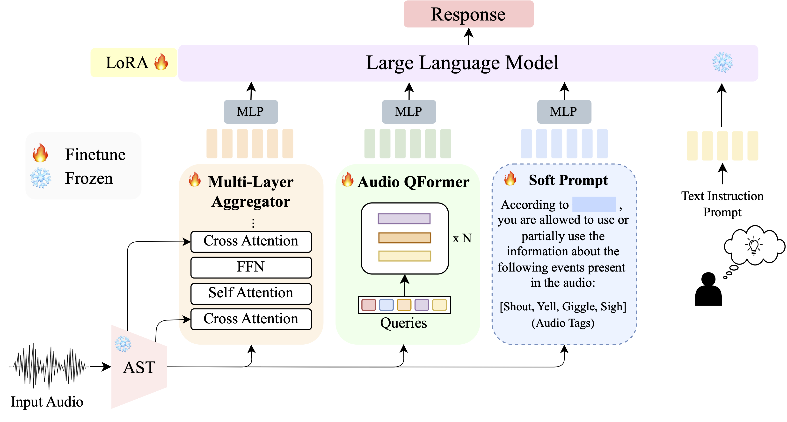

Abstract. Perceiving and understanding non-speech sounds and non-verbal speech is essential to making decisions that help us interact with our surroundings. This paper proposes GAMA, a novel General-purpose Large Audio-Language Model (LALM) with Advanced Audio Understanding and Complex Reasoning Abilities. We build GAMA by integrating an LLM with multiple types of audio representations, including features from a custom Audio Q-Former, a multi-layer aggregator that aggregates features from multiple layers of an audio encoder. We fine-tune GAMA on a large-scale audio-language dataset, which augments it with audio understanding capabilities. Next, we propose CompA-R (Instruction-Tuning for Complex Audio Reasoning), a synthetically generated instruction-tuning (IT) dataset with instructions that require the model to perform complex reasoning on the input audio. We instruction-tune GAMA with CompA-R to endow it with complex reasoning abilities, where we further add a soft prompt as input with high-level semantic evidence by leveraging event tags of the input audio. Finally, we also propose CompA-R-test, a human-labeled evaluation dataset for evaluating the capabilities of LALMs on open-ended audio question-answering that requires complex reasoning. Through automated and expert human evaluations, we show that GAMA outperforms all other LALMs in literature on diverse audio understanding tasks by margins of 1%-84%. Further, GAMA IT-ed on CompA-R proves to be superior in its complex reasoning and instruction following capabilities.

Figure 1: Illustration of GAMA. The GAMA architecture involves integrating various audio features with a pre-trained text-only LLM. The audio features are added as a prefix to the user's text instruction, and the LLM responds with text output. GAMA uses three types of audio features: (1) Multi-Layer Aggregator processes features from AST layers, encoding diverse surface features; (2) Pre-trained Audio Q-Former encodes audio into a semantically rich space; (3) After fine-tuning with CompA-R, a soft prompt with audio tags from AST is used, providing high-level semantic knowledge to enhance complex reasoning abilities.
| Audio | GAMA | LTU | Pengi | SALMONN |
|---|---|---|---|---|
|
Instruction: Analyze the audio and infer the likely engine type based on the sound of acceleration and revving. Audio Id: agvN8wDqelE |
The truck is probably a diesel, as indicated by the heavy engine sounds and the absence of a typical gasoline engine's characteristic high-pitched whine at idle. | Based on the sound of acceleration and revving, it is likely that the engine type is a high-performance or sports car engine. | It is diesel. | The audio contains the sound of an engine revving and accelerating. Based on this, it is likely that the engine type is a high-performance gasoline engine, such as a V8 or a turbocharged four-cylinder. The sound of the engine revving and accelerating is a common characteristic of high-performance engines, which are designed to produce a lot of power and torque. The sound of the engine can vary depending on the specific make and model of the vehicle, but the general characteristics of a high-performance engine can be identified by the sound of the engine revving and accelerating. |
|
Instruction: Based on the combination of subway sounds and male speech, suggest the actions the man might be performing at this time. Audio Id: 4nw3UiN65Y8 |
The man is likely giving instructions to passengers or announcing a station stop. He may also be explaining the train's route or destination. | The man may be giving a lecture or presentation in the subway car while people are moving around him, possibly taking notes. | It is a man. | It is difficult to determine the exact actions the man might be performing based solely on the combination of subway sounds and male speech. However, it is possible that the man is giving a public announcement or warning to the passengers on the subway. |
|
Instruction: Given the variety of sounds including mechanisms, generic impact sounds, and water splashes, determine the most probable activity occurring during the audio clip. Consider the presence of baby laughter in your analysis. Audio Id: 8NNEbcu6tlw |
The woman is likely bathing her child, as indicated by the sound of a bathtub filling up with water. | The most probable activity occurring during the audio clip is a family or group of people having fun together, possibly playing with babies or toddlers. The mechanical sounds could be from a playground or other outdoor equipment. | It is a combo. | Based on the variety of sounds including mechanisms, generic impact sounds, and water splashes, as well as the presence of baby laughter, the most probable activity occurring during the audio clip is likely a bath or a water-related activity. |
|
Instruction: Inferring from the nature and arrangement of sounds, what can be said about the skill level of the tap dancer? Audio Id: r-5NCjm4GlQ |
The tap dancing is likely performed by a professional or an expert. The rhythm and tempo are consistent throughout the entire duration of the clip. | The skill level of the tap dancer cannot be inferred from the audio clip. | It is a big crowd. | The skill level of the tap dancer can be inferred from the nature and arrangement of sounds. If the sounds are complex and intricate, it suggests that the dancer is highly skilled. On the other hand, if the sounds are simple and repetitive, it suggests that the dancer may not be as skilled. |
| Audio | GAMA | Qwen | Pengi | SALMONN |
|---|---|---|---|---|
|
Instruction: Write an audio caption describing the sound in detail. Gold: Helicopter blades spinning. Audio Id: VQnmlf2OsUg |
The sound is a continuous humming of a helicopter engine, with occasional impact sounds likely from the toy drone being used or moved around in the room. | A small motor running at high speed. | A small helicopter engine running. | The sound of a helicopter hovering overhead. The rotor blades are whirring loudly and the engine is humming. The helicopter is flying at a low altitude and the wind is blowing. The sound of the helicopter fades into the distance as it flies away. |
|
Instruction: Write an audio caption describing the sound in detail. Gold: An adult female speaks, and muted speech occurs briefly in the background. Audio Id: CM49C3RkzV8 |
The woman is speaking passionately, her voice echoing through a large room, possibly a conference hall or auditorium, with occasional impact sounds and breathing. | A woman speaks. | A woman is speaking in the background. | The sound is of a woman speaking in a high-pitched voice. The audio is clear and crisp, with no background noise. |
|
Instruction: Write an audio caption describing the sound in detail. Gold: A sewing machine operating as a machine motor hisses loudly in the background. Audio Id: KtTLsveexOg |
The sound is a continuous, rhythmic humming of a machine, possibly a power tool or engine, with occasional impact sounds and a squeal towards the end, suggesting some sort of operation. | A drill is running and then stops followed by a high pitched whistling sound. | A large motor is running, and an adult male speaks in the background. | The sound of a sewing machine running at a high speed, with the whirring sound of the motor and the clacking sound of the needle moving up and down through the fabric. |
|
Instruction: Write an audio caption describing the sound in detail. Gold: A speedboat running as wind blows into a microphone. Audio Id: qF72bT878gw |
The sound is a motorboat or speedboat accelerating, indicated by the continuous roar of the engine and wind noise throughout the audio clip, suggesting a high-speed journey on water. | A drill is running and then stops followed by a high pitched whistling sound. | A motorboat engine is running | The sound of a motorboat speeding through the water with a high-pitched whirring noise can be heard in this audio clip. The wind is blowing and the sound of the waves crashing against the shore can be heard in the background. |